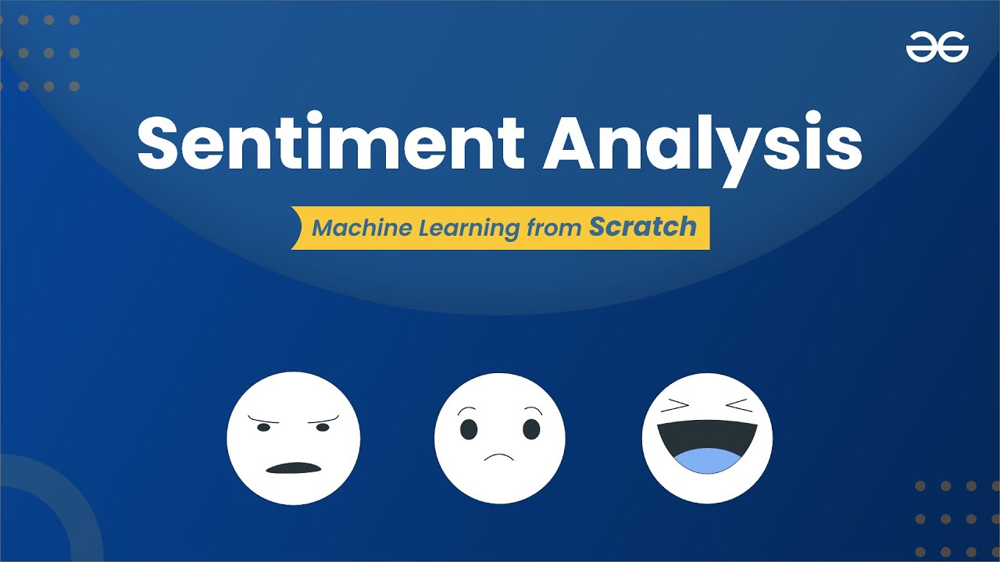
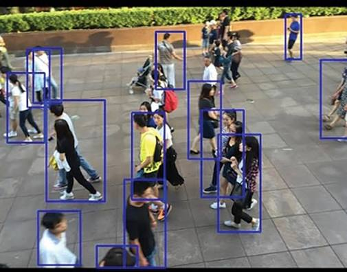
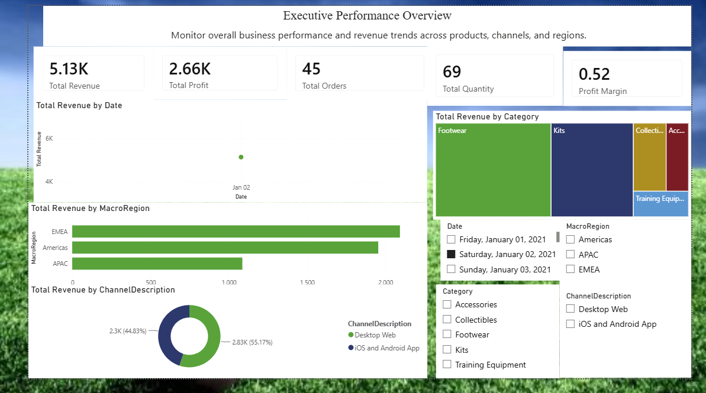

A collection of AI, Machine Learning, Data Science, Web Development and Programming projects that demonstrate my technical skills and problem-solving ability.
Developed an AI-powered application capable of detecting plant diseases from leaf images using Convolutional Neural Networks. The model assists farmers in early disease identification and improves crop productivity.
Tech Stack
Python • TensorFlow • OpenCV • NumPy • Flask
Machine Learning project that predicts whether a customer is likely to repay a loan based on financial and demographic information.
Tech Stack
Python • Pandas • Scikit-learn • Matplotlib
A modern, fully responsive e-commerce website developed to provide users with a seamless online shopping experience. The website features product browsing, category filtering, shopping cart, secure checkout interface, and an attractive user interface.
Tech Stack
HTML • CSS • JavaScript • Bootstrap • GitHub Pages
Developed an interactive data visualization project to analyze large datasets and uncover trends, correlations, and business insights using various charts and statistical plots.
Tech Stack
Python • Pandas • NumPy • Matplotlib • Seaborn

Built a Natural Language Processing (NLP) model that classifies customer reviews into Positive, Negative, and Neutral sentiments, helping businesses understand customer opinions.
Tech Stack
Python • NLTK • Scikit-learn • Pandas • Matplotlib
Developed a web scraping application to automatically collect movie information from IMDb, including ratings, genres, release years, and rankings for further data analysis.
Tech Stack
Python • BeautifulSoup • Playwright • Requests • Pandas
Developed a comprehensive sales analytics dashboard using Python to analyze Amazon sales data, identify sales trends, evaluate product performance, and generate actionable business insights through data visualization.
Tech Stack
Python • Pandas • NumPy • Matplotlib • Seaborn • Jupyter Notebook

Developed a real-time crowd detection system using the YOLOv8 object detection model to identify and count people in images and videos. The system can assist in public safety, event monitoring, and smart surveillance applications.
Tech Stack
Python • YOLOv8 • Ultralytics • OpenCV • Gradio • NumPy

Designed and developed an interactive Power BI dashboard to analyze sales performance, customer behavior, and business trends. The dashboard enables data-driven decision-making through dynamic visualizations, KPI monitoring, and interactive filtering.
Tech Stack
Power BI • Power Query • DAX • Microsoft Excel • Data Modeling